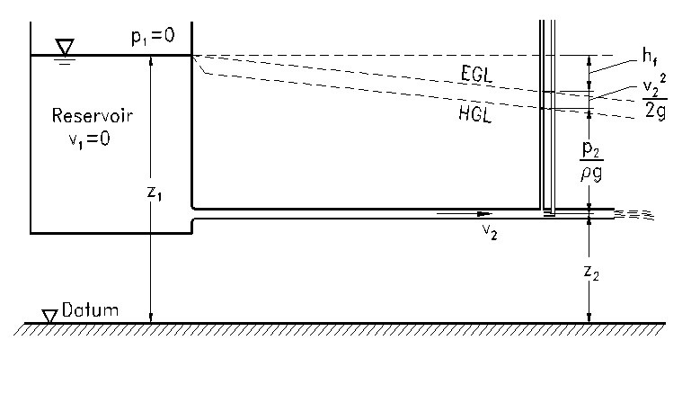
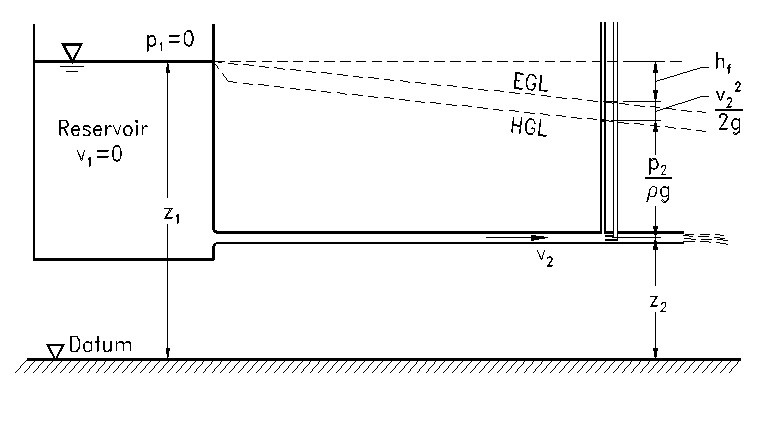

Web-based Problem Solving System for Fluid Mechanics Course
Welcome to Civil Technology 3 Problem Solving Page!
This web based tool solve problems associated with the fluid mechanics course. Students can explore problems that include energy concepts of fluid dynamics, fluid flow in pipes, and
open channel flow. Solved examples are also given to better understand this solving system.
And it has links to the chapters of your lecture note…
Disclaimer:
This web based problem solving tools and any examples contained herein are provided "as is" and are subject to change without notice. The author and Thompson Rivers University shall not be liable for any errors or for special, indirect or consequential damage arising from the use of the programs and examples contained herein.
 

Last Modified:January 25,2026
by Ehsan Ahmed.